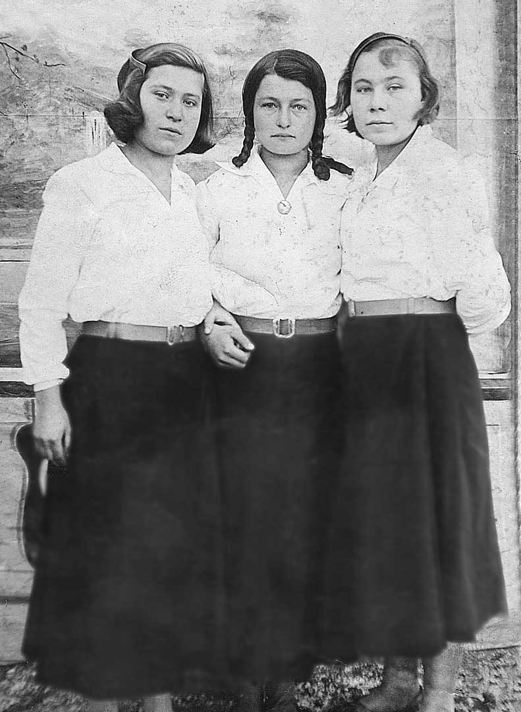

Наши родители
Отец
Коротков Леонид Иванович родился 6 февраля 1918 года в селе Большие Копёны Боградского района (Хакасия) в большой многодетной семье.
Дети старше его: Герасим, Василий, Анна. Дети младше его: Евдокия, Раиса, Гавриил (Геннадий). В семье родилось 13 детей, трое умерли в младенчестве, трое – в раннем детстве от болезней.
В Сибирь семья приехала из Горьковской области после революции 1917 года. Жили зажиточно, у деда был свой корабль.
Дед – Иван Сергеевич, бабушка – Мария Прохоровна (в девичестве Работкина).
Семья большая, трудолюбивая, все обязанности по хозяйству распределены. Был большой огород, скот, даже две лошади, мельница. Много заготавливали запасов на зиму, соленья, варенья, много груздей, лесной клубники. Всё это хранилось в холодных погребах в бочках и бочонках, в туесах.
Старшие дети осваивали технику, ездили на мотоциклах, машинах, тракторах даже водили поезда. С раннего детства всё умели делать по хозяйству, паяли, выпиливали, подшивали валенки, делали ремонт. Учились в ФЗУ, работали машинистами паровоза, шофёрами, киномеханиками. После 7 класса Евдокия поступила в педучилище, а наш Леонид – в ФЗУ.
Вспоминал часто наш отец жизнь молодую в общежитии, как сами готовили обед и убирались в комнате, как иногда без билета ходили в кино и ездили на поезде, как лазили в сады и огороды.
Соседи по Бограду из зависти написали донос, что семья богатая, использует чужой труд, эксплуатирует людей. И началось раскулачивание. Забрали и увезли скот, потом мельницу, дом, участок. И выслали всех на северо- восток, за Канск.
Там старшие семьи не растерялись, стали копать просторную землянку, соорудили накат и закрыли хвойными ветками. Приближалась зима. Спустя некоторое время написали письмо – апелляцию, в котором указали состав семьи и родственников, которые работали на хозяйстве, ведь чужих не было.
Когда пришли документы, всех вернули домой. Возвратили дом, мельницу и часть скота. Но дед Иван Сергеевич не мог простить обиды людям, которые много лет были соседями, да и властям доверия не осталось. Семья переехала в Июс. Раиса ходила в школу, она вспоминала подруг и даже заезжала к ним позже.
Мать
Мазур Наталья Федотовна родилась 6 ноября 1921 года в селе Поташня Бершадского района Винницкой области (Украина). В семье было четверо детей: Ефросинья, Павел, Прасковья, Наталья.
Дед – Федот, бабушка – Матрёна. Семья жила бедно, как и большинство людей.
В начале шестидесятых годов мы всей семьёй поехали на Украину. Хата под соломенной крышей с глиняным полом делилась на две половины, посередине - печь. Слева – большая горница и лестница, ведущая на чердак. В кухне, у окна, стол с лавками вокруг. Кровати типа топчана с перинами, покрывалами с вышивками. За домом был большой сад, где росли плодовые деревья и размещались небольшие грядки. Сливу называли «кобылёхой», а ореховое дерево казалось громадным.
Меня поразило гостеприимство украинцев. Приходили в гости с горилкой и варениками, наливали и пили по одному по кругу. Кисель ели ложками, т.к. он был густой, как студень, с вишней, черешней, грушей, сливами – фруктовый суп. Удивительно!
По навету родных, которые не поделили земельные участки, семью Мазур сослали в Сибирь.
Они долго ехали в товарном вагоне, обменивая на еду вещи, которые успели захватить с собой, вышивки, вязаные коврики, блузки – вышиванки, наволочки, подзоры и одежду. Местом их проживания стал Северо-Енисейск. Дед Федот работал на Енисейских золотых приисках в Еруде. Позже на приисках работала вся семья.

Мама наша была ещё школьницей. Она вспоминала, как они намывали золотой песок. У всех детей были копилки с золотым песком, который меняли на продукты, ткань, одежду.
Во время войны мама училась в Ачинском сельхозтехникуме на зоотехника. На опытном участке выращивали пшеницу, овёс, рожь, был скотный и птичий дворы. Голодали, но не очень: варили суп, пекли лепёшки и даже подкармливали мальчишек со своего курса.
Наташа была любимой дочерью, самой младшей, умненькой и красивой. Она модно и богато одевалась по сравнению с подругами (брючки, сапожки, перчатки, вышитые блузки). На танцах в военном городке познакомилась с военным Федором, хотя он своего имени не назвал, т.к. оно ему не нравилось. Это выяснилось позже. Они стали дружить. Федю мобилизовали на фронт, некоторое время от него приходили письма. Фёдор погиб на войне, как и множество молодых солдат, защищая нашу Родину. Мама знала его Усть-Абаканский адрес и после войны заезжала к его матери.
После окончания техникума было распределение в Краснотуранск. Мама работала зоотехником и преподавателем биологии в вечерней школе (ШРМ). В Краснотуранске молодёжь ходила в кино, на танцы. Общались на работе, встречались, знакомились. (Из воспоминаний мамы). Она была знакома с Коротковыми (Леонидом, Александром, Евдокией), с Устюговыми, с Рехловыми. Ей нравились Александр и Георгий, но выбор был сделан, предпочтение было отдано Леониду, нашему отцу. В 1946 году он демобилизовался из Чехословакии. Сестре Евдокии очень нравилась Наташа. Она познакомила наших родителей и благословила их.
Ещё прекрасной партией мог стать Георгий. Он до своей Марии провожал нашу Наташу и поражал юмором, песнями, добротой и эрудицией.
Потом баба Мария скажет: «Невестки у нас маненькие, а сыны – орлы». В ответ услышит: «А что, маненькие - не люди?» Наши родители поженились в 1946 году.